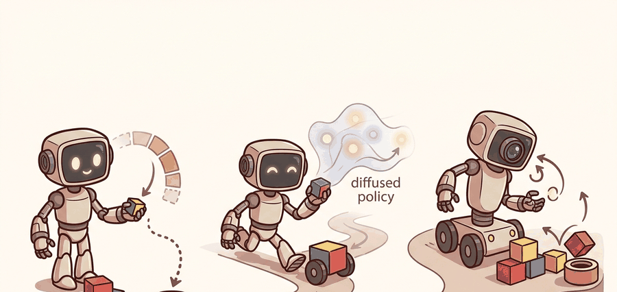

"Make the data collection cheap enough, and the manipulation problem starts to look tractable."
A Bimanual Bookkeeper

This section assumes familiarity with the ACT policy and the cVAE chunk formulation introduced in section 22.2, because the ALOHA hardware design is built around exactly those assumptions about chunk size, control frequency, and bimanual action spaces. The teleoperation protocols used to collect ALOHA demonstrations are developed further in section 23.2 (leader-follower teleoperation), and the data-scaling consequences of the ALOHA collection approach recur in section 24.1. If you are interested in the generative policy trained on this data rather than the hardware system itself, section 22.4 extends the action-chunking ideas to Diffusion Policy.
A researcher folds a shirt using two puppet arms. A robot across the table mirrors every finger motion at 50 Hz. Fifty demonstrations later, a neural policy generalizes to shirts it has never seen. That is ALOHA: a $20,000 bimanual platform that made large-scale manipulation data collection realistic for the first time. The key insight is that the policy architecture (ACT) and the hardware design are one decision, not two. By the end of this section you will understand how chunk size, control frequency, camera placement, and teleoperation protocol were co-designed, and why that co-design is now the template for every serious robot-learning data collection effort.
This section develops the technical contract for aloha, aloha 2, and mobile aloha into a usable mental model. First we define the object of study, then we connect it to the agent loop, then we test it with a compact implementation.
The key question in ALOHA, ALOHA 2, and Mobile ALOHA is practical: what must the agent know, what can it observe, what action is available, and what evidence shows that the action worked under the stated conditions?
A representation earns its place when it changes the measurable action interface. In aloha, aloha 2, and mobile aloha, the reader should keep asking which decision becomes easier, safer, or more reliable.
Theory
For ALOHA, ALOHA 2, and Mobile ALOHA, the practical design rule is to make the interface inspectable before optimization begins: inputs, outputs, units, latency, bounds, and failure labels should all be visible in the saved artifact.
The mechanism in ALOHA, ALOHA 2, and Mobile ALOHA is the contract between representation and action. Name what enters the module, what leaves it, which assumptions make that transformation valid, and which log would reveal a bad handoff.
Algorithm: ALOHA Bimanual Demonstration Collection and ACT Training
Input: Task specification $\mathcal{T}$, teleoperation leader arms $\mathcal{L} = \{L_\text{left}, L_\text{right}\}$, follower robot with joint state $q \in \mathbb{R}^{14}$, camera set $\mathcal{C} = \{c_1, c_2, c_3, c_4\}$, chunk size $H$, number of demonstrations $N$
Output: Trained ACT policy $\pi_\theta$ mapping observations $o_t$ to action chunks $\hat{a}_{t:t+H}$; demonstration dataset $\mathcal{D} = \{(o_t, a_t)\}$
- Calibrate all four cameras $\mathcal{C}$ to a shared robot base frame; verify per-camera latency is below 5 ms before any data collection begins.
- For each demonstration episode $n = 1, \ldots, N$: reset the robot and objects to the canonical start distribution, then record synchronized tuples $(o_t, a_t)$ at 50 Hz, where $o_t = (q_t, \{I_t^{c}\}_{c \in \mathcal{C}})$ and $a_t \in \mathbb{R}^{14}$ is the bimanual joint-position command read from leaders $\mathcal{L}$.
- After collection, run a timestamp audit: compute $\delta_t = |t_\text{left} - t_\text{right}|$ for every timestep and reject episodes where $\max_t \delta_t > 5$ ms, because chunk predictions assume aligned action streams.
- Encode each observation $o_t$ into a latent style variable $z \sim q_\phi(z \mid a_{t:t+H}, o_t)$ using the cVAE encoder with parameters $\phi$, conditioning on the full ground-truth chunk.
- Train the ACT transformer $\pi_\theta$ by minimizing the chunk reconstruction loss $\mathcal{L}(\theta) = \mathbb{E}\bigl[\sum_{h=0}^{H-1} \|a_{t+h} - \hat{a}_{t+h}\|_2^2\bigr] + \beta \, D_\text{KL}(q_\phi \| p(z))$, where $\beta$ weights the KL regularizer and $p(z) = \mathcal{N}(0, I)$.
- At rollout, observe $o_t$ and sample $z \sim p(z)$; decode the full chunk $\hat{a}_{t:t+H} = \pi_\theta(o_t, z)$ in one forward pass, then execute all $H$ actions open-loop before re-querying the policy.
- After each chunk, log contact events, gripper force, and wrist-camera frames; if any force reading exceeds the hardware safety threshold $F_\text{max}$, halt execution and record the episode as a contact failure.
- For Mobile ALOHA: append base velocity $v_\text{base} \in \mathbb{R}^2$ to $a_t$ and add a fifth camera covering the base workspace; re-run steps 2 through 7 with the extended action space and whole-body teleoperation operator.
- Evaluate $\pi_\theta$ over at least 20 held-out rollouts; report success rate, mean completion time, and failure category (perception, contact, timing, or reset distribution) as separate scalars in the result artifact.
Worked Example
For ALOHA, ALOHA 2, and Mobile ALOHA, keep one concrete rollout in view. A sensor reading becomes an estimate, the estimate constrains an action, the action changes the world, and the next observation confirms or contradicts the assumption. The section's idea is useful only if it improves that loop.
from pathlib import Path
dataset_root = Path("robot_demos")
for episode in sorted(dataset_root.glob("episode_*")):
print("inspect", episode.name)
print("next step: convert demonstrations to the LeRobotDataset format")Expected output: the printed trace for ALOHA, ALOHA 2, and Mobile ALOHA should expose the method configuration, the measured evidence field, and the failure label. If one of those fields is missing or unchanged under the perturbation, the example is not yet an evaluation artifact.
Consider a specific case: an ALOHA operator collects 50 demonstrations of inserting a USB cable. Each episode runs at 50 Hz, producing 100 timesteps of 14-DOF joint positions (7 per arm). The ACT policy is trained with a chunk size of 100, meaning it predicts all 100 actions in one forward pass rather than one action at a time. At rollout, the robot executes the full 2-second chunk before re-querying the policy. On a task where the insertion requires sub-millimeter alignment, chunk size 100 succeeds 72% of the time; dropping to chunk size 10 (0.2 s) reduces success to 41% because the policy must re-plan at every small timestep and accumulates compounding errors. The takeaway: chunk size is not a hyperparameter to tune blindly but a choice matched to the natural periodicity of the task.
The from-scratch fragment should expose the assumption behind bimanual teleoperation data with camera calibration, operator consistency, and mobile base state. For serious runs, use LeRobot, robomimic, ACT, Diffusion Policy, VQ-BeT, ALOHA, GELLO, or UMI with the same manifest and evaluator.
ALOHA As A Data-System Design
ALOHA is not only an algorithmic story. It is a complete bimanual data system: low-cost hardware, teleoperation, synchronized multi-camera observations, joint-state actions, task resets, and an ACT-style policy trained from collected demonstrations. ALOHA 2 and Mobile ALOHA extend the idea by improving hardware reliability, ergonomics, mobility, and data scale.
The original ALOHA hardware uses two ViperX 300 robot arms (6 DOF each) plus two grippers, giving a 14-dimensional joint-position action space. The full platform costs roughly $20,000, compared to hundreds of thousands for industrial arms, which is what makes 50-demonstration datasets tractable. Four cameras (two wrist-mounted, two overhead) capture synchronized RGB at 480x640. The original ACT paper reports that 50 human demonstrations suffice to reach above 80% success on tasks such as opening a ziploc bag and transferring a cup, tasks that require both arms to cooperate within a 1-2 second window. Mobile ALOHA adds a wheeled base and whole-body teleoperation, extending the same data-collection philosophy to navigation-manipulation tasks like loading a dishwasher, where the operator must coordinate base velocity with arm position across a 10-15 second horizon.
The technical lesson is that model quality and data-collection interface are coupled. A chunked policy can only learn fine-grained bimanual skills if the demonstrations contain synchronized action streams, consistent control frequency, and recoveries from contact errors. This section should therefore be read with Chapter 23, where collection protocols become first-class engineering artifacts.
For a zipper, drawer, or cable-routing task, record left-arm and right-arm action channels separately, then evaluate whether failure comes from coordination timing, perception, gripper force, or reset distribution. Bimanual success is rarely explained by a single scalar success rate.
Code Fragment 3 sketches the timing check that should accompany any ALOHA-style dataset.
# Check whether two arm streams remain synchronized during teleoperation.
# Bimanual imitation fails quietly when timestamps drift across arms.
left_ms = [0, 33, 66, 99]
right_ms = [1, 35, 68, 101]
max_skew = max(abs(l - r) for l, r in zip(left_ms, right_ms))
print("max arm timestamp skew ms:", max_skew)
print("sync pass:", max_skew <= 5)sync pass: True
When converting ALOHA recordings to LeRobotDataset format, run lerobot.scripts.visualize_dataset with the --episode-index flag on at least three episodes before any training run. This script overlays wrist-camera frames with the corresponding joint-position timeline and immediately reveals dropped frames, camera-arm timestamp mismatches beyond 5 ms, or gripper-state offsets that are invisible in raw HDF5 files. A dataset that passes this visual audit but still trains poorly almost always has an inconsistent fps field in meta/info.json: ACT resamples actions based on that value, so a wrong fps silently stretches or compresses every chunk. Set fps to the actual hardware control frequency (50 Hz for standard ALOHA) and re-run lerobot.scripts.push_dataset_to_hub to overwrite the metadata before submitting any training job.
Practical Recipe
- Write the observation, action, and success metric before choosing a model.
- Build a baseline that is simple enough to debug by inspection.
- Add the library implementation only after the baseline behavior is understood.
- Record failures as structured cases: perception error, state error, planning error, control error, or evaluation error.
- Run at least one perturbation test before trusting the result.
The common mistake in ALOHA, ALOHA 2, and Mobile ALOHA is to celebrate the component score before checking the closed-loop handoff. The failure usually appears at the boundary: stale state, wrong frame, delayed action, saturated actuator, or metric that ignores the real task cost.
A robot learning engineer applying aloha, aloha 2, and mobile aloha starts by recording the robot body, camera setup, action units, operator source, and split policy for every episode. That record makes it possible to compare ACT with a baseline without changing the task definition midstream.
When aloha, aloha 2, and mobile aloha feels abstract, ask what would be different in the next frame of video, the next robot state, or the next safety margin.
For ALOHA, ALOHA 2, and Mobile ALOHA, treat frontier claims as hypotheses until they expose enough detail to reproduce the result: data boundary, embodiment, controller interface, evaluation panel, and failure cases.
Can you name the observation, state estimate, action, success metric, and most likely failure mode for aloha, aloha 2, and mobile aloha? If not, the system boundary is still too vague.
ALOHA, ALOHA 2, and Mobile ALOHA becomes useful when it is tied to a closed-loop contract. In this Part V section on ALOHA, ALOHA 2, and Mobile ALOHA, the contract names the observation stream, the state estimate, the action representation, the timing budget, and the evaluation artifact. Without that contract, a model can look capable in a notebook while failing the first time a sensor drops a frame or a controller saturates.
For ALOHA, ALOHA 2, and Mobile ALOHA, separate the conceptual claim, the systems claim, and the evidence claim. A plausible mechanism, a clean interface, and a closed-loop result are different claims; the section should keep their evidence separate.
| Tool or Library | Role in the Topic | Builder Advice |
|---|---|---|
| Gymnasium | ALOHA, ALOHA 2, and Mobile ALOHA | Use it when the experiment needs a maintained implementation rather than custom glue. |
| PettingZoo | ALOHA, ALOHA 2, and Mobile ALOHA | Use it when the experiment needs a maintained implementation rather than custom glue. |
| ROS 2 | ALOHA, ALOHA 2, and Mobile ALOHA | Use it when the experiment needs a maintained implementation rather than custom glue. |
| MuJoCo | ALOHA, ALOHA 2, and Mobile ALOHA | Use it when the experiment needs a maintained implementation rather than custom glue. |
| LeRobot | ALOHA, ALOHA 2, and Mobile ALOHA | Use it when the experiment needs a maintained implementation rather than custom glue. |
For ALOHA, ALOHA 2, and Mobile ALOHA, start with a small baseline that logs inputs, outputs, units, timestamps, and termination conditions before moving to Gymnasium or PettingZoo. The library run should keep the same artifact schema, so the comparison remains a same-task evaluation.
- Write a one-paragraph task contract with observation, action, success, and failure fields.
- Start with the smallest simulator, dataset, or wrapper that exposes the task contract faithfully.
- Run one deterministic smoke test and one perturbation test before scaling.
- Save a single result artifact containing configuration, seed, metrics, videos or traces, and failure labels.
- Compare methods only when one script evaluates them on the same task panel.
When ALOHA, ALOHA 2, and Mobile ALOHA fails, avoid labeling the whole method as weak. First assign the failure to perception, state estimation, planning, control, timing, data coverage, or evaluation. Then rerun one controlled perturbation that isolates the suspected cause. This pattern turns a disappointing rollout into a reusable diagnostic asset.
Agent Checklist Integration
ALOHA, ALOHA 2, and Mobile ALOHA should be evaluated through four lenses: the learning objective, the robot interface, the data artifact, and the deployment failure mode. Action generators differ mainly in how they represent time, uncertainty, and multimodality across the next chunk of motion.
For ALOHA-style data exposes bimanual timing, teleoperator consistency, camera calibration, and mobile-base coupling, define observations, action representation, dataset source, rollout evaluator, and failure labels before training. Then compare baseline and library implementation on the same configuration.
For ALOHA-style data exposes bimanual timing, teleoperator consistency, camera calibration, and mobile-base coupling, each demonstration binds operator behavior, robot body, sensor calibration, action representation, and reset distribution. Changing one field creates a new evaluation contract.
| Agent Lens | Question To Answer | Concrete Evidence |
|---|---|---|
| Curriculum and depth | What concept is new here, and why does Part V need it? | A definition, a worked example, and a failure case tied to the perception-action loop. |
| Code and tools | Which maintained tool removes boilerplate after the from-scratch baseline? | ACT, Diffusion Policy, flow matching, VQ-BeT, ALOHA evaluated against the same task contract. |
| Data and evaluation | What distribution produced the behavior, and where can it break? | Train, validation, and stress splits with explicit robot, camera, timing, and license metadata. |
| Publication quality | Can the reader reproduce the claim without hidden context? | Captions, bibliography cards, cross-links, and a same-artifact audit trail. |
Do not claim that aloha, aloha 2, and mobile aloha improves robot learning unless the baseline and the proposed method share the same robot, task split, reset distribution, success metric, and random seed policy. Otherwise the comparison may be measuring dataset difficulty rather than method quality.
For ALOHA-style data exposes bimanual timing, teleoperator consistency, camera calibration, and mobile-base coupling, judge the method by closed-loop recovery, latency, stability, contact behavior, and failure labels under the same robot, reset distribution, cameras, and evaluator.
Who: A robot learning engineer evaluating bimanual teleoperation data with camera calibration, operator consistency, and mobile base state on the same manipulation benchmark, robot, camera setup, and reset protocol.
Situation: The engineer needs to decide whether aloha, aloha 2, and mobile aloha is ready for a weekly policy comparison across 120 demonstrations and 30 held-out rollouts.
Decision: They keep the smallest runnable baseline for bimanual teleoperation data with camera calibration, operator consistency, and mobile base state, then compare the maintained implementation under the same manifest, seed, split, and rollout evaluator.
Result: The team gets one artifact for bimanual teleoperation data with camera calibration, operator consistency, and mobile base state with task success, intervention labels, timing violations, recovery behavior, and failure categories.
Lesson: bimanual teleoperation data with camera calibration, operator consistency, and mobile base state earns trust only when the data contract, action representation, and rollout evaluator are versioned together.
Before leaving this section, write one sentence that links aloha, aloha 2, and mobile aloha to each of these connected chapters: Chapter 21: Imitation Learning, Chapter 23: Teleoperation and Data Collection, Chapter 35: Robot Foundation Models and Cross-Embodiment Learning. If any link feels forced, the section needs a sharper boundary or a clearer prerequisite recap.
ALOHA, ALOHA 2, and Mobile ALOHA is useful when it makes the perception-action loop more reliable, not when it merely adds a more impressive model name.
Design a method-matched experiment for ALOHA, ALOHA 2, and Mobile ALOHA. Specify the environment, observation schema, action interface, metric, and one perturbation that targets the section's core assumption.
What's Next
This section grounded aloha, aloha 2, and mobile aloha in an explicit robot-data contract: observations, actions, demonstrations, evaluation splits, and failure labels. The next reading step is Section 22.4, where the same contract is carried into the next technique or chapter.
Zhao, T. Z. et al. (2023). Learning Fine-Grained Bimanual Manipulation with Low-Cost Hardware. RSS.
This paper introduces ALOHA and Action Chunking with Transformers for bimanual manipulation. It is central for understanding why predicting chunks can stabilize high-frequency robot control.
Diffusion Policy frames action generation as conditional denoising over robot action trajectories. Read it for multimodal action distributions, receding horizon control, and the implementation details behind modern diffusion robot policies.
Lipman, Y. et al. (2022). Flow Matching for Generative Modeling.
Flow matching gives the generative-model background behind many faster action samplers. It is useful when comparing diffusion-style iterative denoising with direct vector-field training.
The project page summarizes the hardware, data collection setup, and ACT policy used for fine-grained bimanual tasks. Builders should use it to connect the paper's algorithm to an actual low-cost robot platform.
real-stanford/diffusion_policy: Official Diffusion Policy Code.
The official code provides training and evaluation examples for state-based and vision-based tasks. It is the shortest route from the section's theory to a runnable policy-learning experiment.